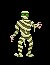
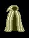
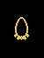

[ Home | Comments | Drakkar Links ]
 |
 |
 |
Find the key to mummy king in Nork -3, it is a random treasure. After you get the key you go to the NE corner of -3 and open the locked set of double doors you find there. You then kill the Mummy King. Take the Mummy King to be tanned and take the cloak to the man behind the west bank. Drop the cloak and some money, about 3K, and trade to get the amulet. The amulet is ProStun level 10 and has a random number of charges. The ProStun twigs you buy in Maeling are level 8, and have 4 charges.